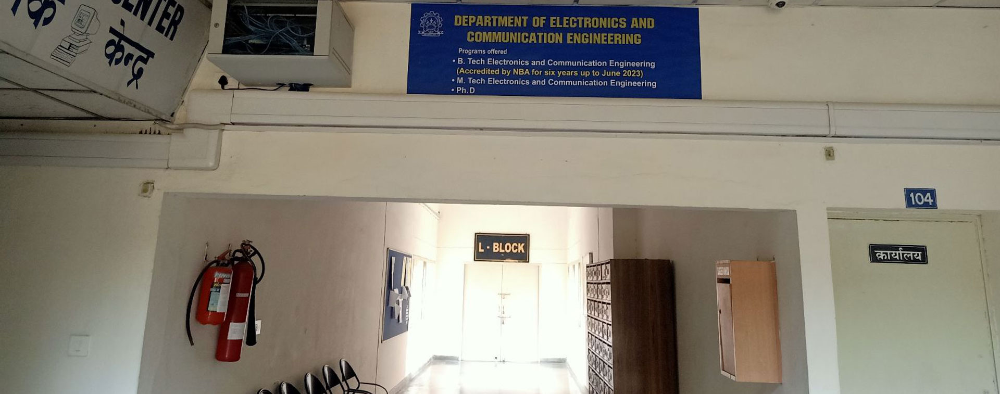
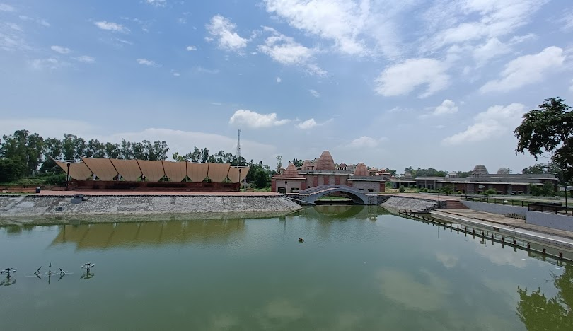
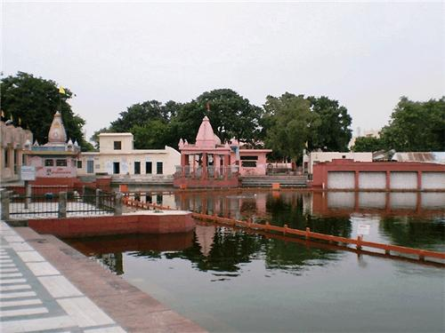
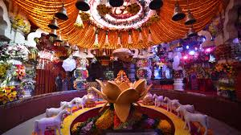
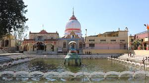
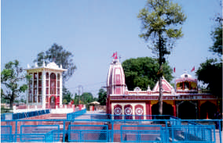

International Conference on Next-Gen Technologies in Communication and Computing
November 19–21, 2026
National Institute of Technology Kurukshetra

November 19–21, 2026
National Institute of Technology Kurukshetra (NIT Kurukshetra), an Institute of National Importance in India, is one of the leading institutions established in 1963 for imparting higher technical education in major fields such as engineering, technology, science, and management; it was conferred the status of a Deemed University on June 26, 2002, and has since been known as NIT Kurukshetra (Deemed University), and is a fully residential institution well recognized for its dedicated faculty, supportive staff, and state-of-the-art infrastructure, offering a wide range of academic programs including B.Tech., M.Tech., M.C.A., M.B.A., and Ph.D. degrees, along with an excellent placement record for both undergraduate and postgraduate students.

Kurukshetra is a place of religious pilgrimage and historical significance. It is the land of Mahabharata and place where sermons of 'Bhagwad Gita' were delivered. In medieval period, Thanesar, the old city, was the seat of power of Harshwardhana. Kurukshetra is well connected with rail/road. It is a railway junction on Delhi-Ambala section and is situated on National Highway No. 1 (G.T. Road). It is approximately 160 km from Delhi, 100 km from Chandigarh and 194 km from Shimla. NIT Kurukshetra is about 10 km from Pipli and 6 km from Kurukshetra railway station.

The Department of Electronics and Communication Engineering came into existence in 1973; in 1987, the Computer Engineering branch was also started, and the department was renamed as “Electronics, Communication and Computer Engineering,” while in 2003, it was again renamed as “Electronics and Communication Engineering” following the establishment of a separate Computer Engineering Department; the department initiated its M.Tech. programs in ECE and VLSI Design in 1987 and 2007 respectively, and currently offers B.Tech. and M.Tech. programs in Communication Engineering and Signal Processing along with Ph.D. programs in specific niche areas, supported by well-equipped and sophisticated laboratories in embedded systems, VLSI, communication engineering, microwaves, and satellite image processing.

Jyotisar, the birth place of Gita, is the most venerated place of Kurukshetra. It is believed to be the place where Krishna had deliverzed the eternal message of Bhagavadgita to Arjuna in the battle field of Mahabharata.

Named after Lord Brahma, the creator, this huge water tank is believed to be created over the land, where Brahma had performed his first sacrifice. This tank is one of the largest man made bathing tank in Asia.

It is believed that on the occasion of every Amavasya the waters of all tirthas present on the earth assemble here. A holy dip taken in its waters during solar eclipse is considered highly meritorious and bears the sanctity of performing thousands of Aswamedha Yajnas.

This temple of Kurukshetra is one out of the fifty one Shaktipithas of India. It is believed that right ankle of Sati fell here in the well which is known as Devikupa. Before Mahabharata battle Pandavas and Lord Krishna worshipped mother Goddess here for their victory in Mahabharata battle.

The temple is dedicated to Lord Shiva, the presiding deity of the ancient city of Sthanvishwar presently known as Thanesar. Pandvas worshiped lord Shiva here for the victory in Mahabharata battle. Pushpabhuti, the founder of the Vardhana Empire of Thanesar named the capital of his kingdom after Sthanvishwar Shiva.

After the fall of Bhishma on 10th day of Mahabharata battle, Arjuna created here a fountain of water with an arrow which quenched the thirst of Bhishma. Bhishma imparted the teachings of Rajdharama (statecraft) and Anushashan (discipline) to Yudhishthira and sung here 'Vishnu Sahshranama' the eulogy dedicated to lord Krishna.
Department of Electronics & Communication Engineering
NIT Kurukshetra